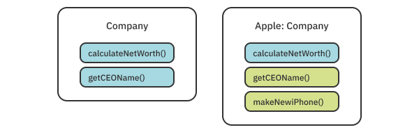
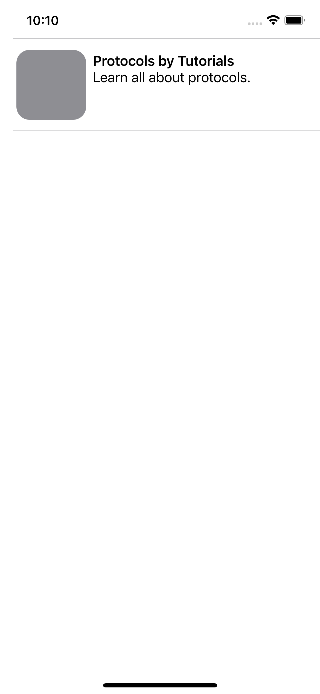
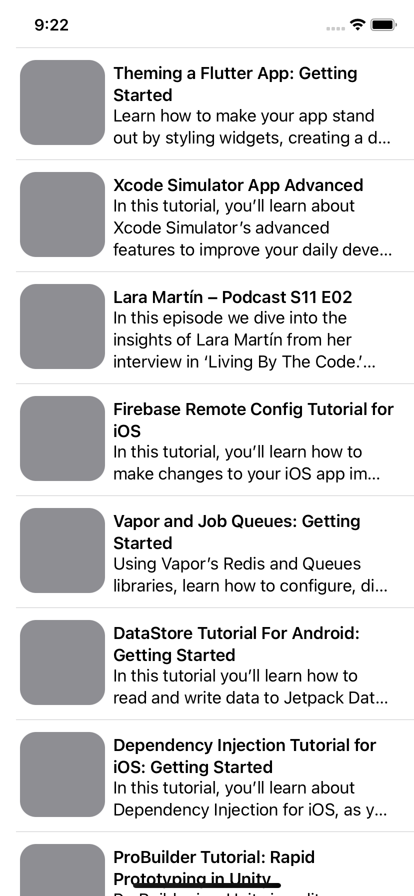
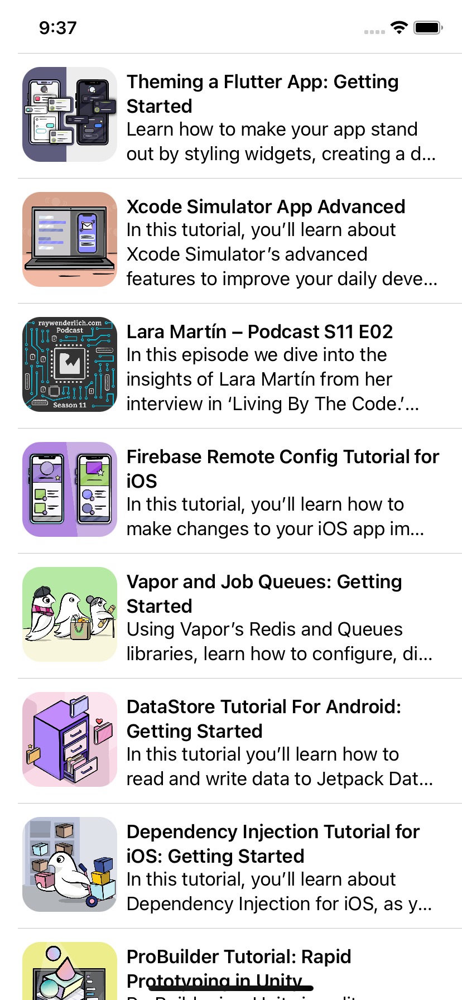
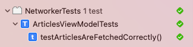
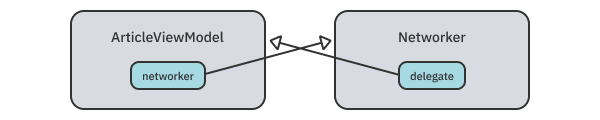

第3章：协议¶
如果你以前使用过Swift，你可能使用过很多协议。协议和面相协议编程是内置于Swift的DNA中的，很难想象如果没有协议的所有力量，Swift会是什么样子。因为它们是Swift不可分割的一部分，所以这一章重点解释了协议是如何工作的，以及你如何在你的代码中利用它们来产生干净、持久和易于重构的API。
作为一个Swift开发者，你可能已经知道了协议的基本知识。不过，简单复习一下协议的基础知识以及它们的一些较少使用的功能也是一个好主意。一旦你提醒自己协议能做的一切，你就会看到它们在幕后是如何工作的。你还会了解到使用协议的常见模式，以及一些需要记住的有用的问题和边缘案例。
你将通过建立一个微小的RESTful网络库来实现这一目标，然后你将用它来制作一个显示raywenderlich.com文章的应用程序。在你动手之前，你将首先对Swift的协议进行简单的回顾。
开始使用协议¶
为了理解为什么协议很重要，退一步讲，看看静态类型的语言是如何工作的。看看下面这行代码：
counter.increment(by: 10)
假设counter是一个叫做Counter的类的对象，而你正在调用一个叫做increment(by:)的实例方法。这个实例方法在类中可能存在，也可能不存在--也许你忘了写它。在像Objective-C这样的动态语言中，编译器会很高兴地运行这段代码，什么也不会发生。一些动态语言，如JavaScript，会运行代码，但会显示一个错误，说increment不存在。Swift作为一种静态类型的语言，首先会检查increment(by:)是否存在于该类中，如果不存在，甚至不会运行你的代码。虽然有时看起来编译器在抱怨，但实际上它在避免你犯愚蠢的错误。
编译器知道这个方法是否存在，因为它知道counter的类型是Counter，然后它可以查询Counter类中是否有匹配的increment方法。但在有些情况下，编译器和你都不能确切地确定你想使用哪种类型。如果你想定义一个单一的函数来增加不同种类的计数器--不仅仅是你自己的Counter，还有DoubleCounter、UserCounter等，该怎么办？
考虑一下下面的方法：
func incrementCounters(counters: [?]) {
for counter in counters {
counter.increment(by: 1)
}
}
counters的类型应该是什么？仅仅限制在[Counter]是没有意义的，因为你希望其他类型也能工作。你可以尝试使用[Any]，但你会得到一个错误--Swift无法知道Any的一个实例是否会有increment(by:)方法。你需要的是告诉编译器 "我想要任何有increment(by:)方法的类型"。这就是协议的作用。
一个协议可以是这样的：
protocol Incrementable {
func increment(by: Int)
}
通过定义一个带有方法要求的协议，你可以把协议作为一个类型，说"这个方法接收任何实现了Incrementable的东西"。
func incrementCounters(counters: [Incrementable]) {
for counter in counters {
counter.increment(by: 1)
}
}
当你写一个协议的具体实现时，Swift会验证你是否声明了increment(by:)方法。知道了这一点，Swift编译器可以保证你的函数对所有Incrementable的实例都有效。
隐藏信息¶
协议是类型系统的一个工具，它允许你通过hiding一个类型的信息来使用多个类型作为同一个超级类型。例如，你知道对于一个边为a和b的正方形，a == b是真的。你还知道一个正方形是一个矩形。通过放松对a == b的要求，你可以把一个正方形当作一个矩形，并定义一个单一的方法来计算面积。这样一来，你就不需要写两个实现了。
以同样的方式，协议隐藏了类或结构的所有其他成员，除了协议所暴露的成员。这使得你可以在同一个地方使用多种类型。
另一种看待协议的方式是作为接口（事实上，许多语言都这样称呼它们）。厨房用具、计算机和手机充电器是完全不同的，但它们都向墙壁上的插座转了同一个接口：一个插头。插座所知道的是，该设备是需要电源的东西，并且有一个插头。同样，如果你在Swift中为不同的设备建模，你可以做一个Pluggable协议，暴露一个plug(in:)方法，让Socket与所有可能的设备一起工作。
编码语义¶
到目前为止，你读到的是一个类型如果实现了所需的方法和协议，就可以符合协议。在Swift中，协议还有一个重要的方面：语义。在编程中，有些东西是你无法在函数签名中编码的。例如，你可能想对一些数组进行排序。为了允许不同的排序算法，你实现了一个Sorter协议，其中有对数组进行排序的方法。
然而，你正在开发一个有大量数据的应用程序，你的算法需要非常快，所以你可能想把Sorter的实现限制在那些有O(n)或更快的大O符号的方法。也许你还要求排序算法是稳定的。一个稳定的算法在排序后能使重复的元素保持相同的顺序。这些都是你不能让编译器为你检查的事情的例子。相反，你必须在类型名和文档中加入这些要求，所以你把协议名改为StableEfficientSorter。
如果协议只是方法上的要求，那就很难写出真正的通用函数，因为实现细节可以完全改变你的代码工作方式。协议也被用来描述语义要求。这正是Swift不自动使类型符合协议的原因。在编写代码时，你必须考虑哪些语义要求对你的协议很重要，并清楚地记录它们。
协议语法¶
现在你已经了解了协议的语义，是时候简单复习一下协议的语法了。
Note
对于本章的这一部分，你不需要跟着打字。但如果你希望这样做，可以先创建一个新的空的游戏场，导入UIKit和SwiftUI。或者，你可以在final/Protocols.playground下找到本节所用的代码。
这里有一个简单的枚举和一个协议。
enum Language {
case english, german, croatian
}
protocol Localizable {
static var supportedLanguages: [Language] { get }
}
该协议有一个必要的成员，supportedLanguages。在这种情况下，这是一个需要有getter的变量（不是一个函数）。协议不要求设置器，这意味着计算变量或用private(set)访问修饰符声明的变量也将满足要求。它还被标记为static，这意味着符合要求的变量也需要是static。
接下来，看一下另一个协议。
protocol ImmutableLocalizable: Localizable {
func changed(to language: Language) -> Self
}
This protocol inherits from the one mentioned earlier. Inheritance in protocols works similarly to classes: All the protocol’s requirements are passed onto its child protocols. This means the ImmutableLocalizable protocol has two required members: supportedLanguages and changed(to:). Unlike supportedLanguages, changed(to:) is a function and must be declared as returning Self, the current type. For instance, if you declare this function inside a class called FeedView, Self will have the value of FeedView.
Next, look at another protocol that inherits from Localizable:
这个协议*继承自前面提到的那个协议。协议中的继承工作与类类似。所有协议的要求都传递给它的子协议。这意味着ImmutableLocalizable协议有两个必要的成员。supportedLanguages和changed(to:)。与supportedLanguages不同，changed(to:)是一个函数，必须声明为返回Self，即当前类型。例如，如果你在一个叫做FeedView的类中声明这个函数，Self的值将是FeedView。
接下来，看看另一个继承自Localizable的协议：
protocol MutableLocalizable: Localizable {
mutating func change(to language: Language)
}
这个协议与上一个协议非常相似，但你会注意到一个新的关键字：mutating。你可能对这个关键字很熟悉，因为当方法主体改变结构的某个属性时，你必须在结构的方法中使用这个关键字。在协议中，它也是同样的意思。结构需要实现这个方法，使其成为mutating，但类不需要。类在默认情况下已经是可变的了，所以没有必要再增加一个关键字。
Implementing protocols¶
Now that you’ve declared three protocols, it’s time to implement them in a few of your types. If you’re used to other programming languages, you might be surprised to hear that, in Swift, every type can implement a protocol. This includes structs, classes and even enums!
Start by declaring a struct called Text, which will implement one of your protocols:
实现协议¶
现在你已经声明了三个协议，现在是时候在你的几个类型中实现它们了。如果你习惯于其他编程语言，你可能会惊讶地发现，在Swift中，每个类型都可以实现一个协议。这包括结构体、类，甚至是枚举。
首先声明一个名为Text的结构，它将实现你的一个协议：
struct Text: ImmutableLocalizable {
static let supportedLanguages: [Language] = [.english, .croatian]
var content = "Help"
func changed(to language: Language) -> Self {
let newContent: String
switch language {
case .english: newContent = "Help"
case .german: newContent = "Hilfe"
case .croatian: newContent = "Pomoć"
}
return Text(content: newContent)
}
}
Text结构实现了ImmutableLocalizable协议。这意味着它需要实现ImmutableLocalizable和Localizable属性的所有成员，因为一个是继承自另一个。
你也可以使用扩展来使类型符合协议：
extension UILabel: MutableLocalizable {
static let supportedLanguages: [Language] = [.english, .german]
func change(to language: Language) {
switch language {
case .english: text = "Help"
case .german: text = "Hilfe"
case .croatian: text = "Pomoć"
}
}
}
你会更经常地看到扩展用于将一个类型符合一个协议。这样做允许你将你控制之外的类型，如SwiftUI或UIKit中的类型，与你的协议相符合。它还提供了一个很好的方法来结构你的文件，这样所有与协议相关的东西都在一个扩展中，让你更容易浏览文件。
扩展协议¶
并非所有的协议成员都是必需的。你可以通过扩展协议本身来提供一个协议成员的默认实现：
extension Localizable {
static var supportedLanguages: [Language] {
return [.english]
}
}
Note
像这样扩展协议，有一些注意事项需要考虑。在本章的后面，你将了解这个扩展是如何工作的，以及一些需要警惕的边缘情况。
在这里，你用supportedLanguages的默认实现来扩展Localizable。每个符合Localizable的类型现在都可以访问这个实现，所以他们不需要定义自己的。
struct Image: Localizable {
// no need to add `supportedLanguages` here
}
到目前为止，你已经使用了你的代码中任何类型都可以实现的协议。你可以限制你的协议只由类来遵守。你可以通过继承AnyObject协议来做到这一点--这是一个每个类都隐含地符合的协议。
protocol UIKitLocalizable: AnyObject, Localizable {
func change(to language: Language)
}
请注意，尽管这个协议与MutableLocalizable有相同的要求，但mutating这个关键词被丢失了。因为这个协议只能由类来实现，所以没有理由指定某个东西是可变的。在类中，所有的东西默认都是可变的。
说到限制协议的一致性，你也可以将协议限制在一个特定类的子类上。
protocol LocalizableViewController where Self: UIViewController {
func showLocalizedAlert(text: String)
}
在这里，你的协议只能被UIViewController或其子类使用。
协议是抽象的。但这并不意味着你不能根据需要具体化，将一致性限制在你需要的类型上。
现在你有了一堆类型和协议，你可以充分地使用它们。例如，你可以定义一个单一的函数，与所有MutableLocalizable类型一起工作。
func localize(
_ localizables: inout [MutableLocalizable],
to language: Language
) {
for var localizable in localizables {
localizable.change(to: language)
}
}
注意，你使用了一个MutableLocalizable的数组，只要它们都实现了MutableLocalizable，就可以用任何类型的组合填充。
协议有巨大的力量。但除非你在一个大的代码库上工作很长时间，否则很难看到它们有多大作用。协议所提供的一切都可以通过其他方式来实现，如使用继承、泛型、函数重载或复制和粘贴代码。所有这些方式所缺乏的是明确的意图和语义，以及协议保证的安全性和重构的便利性。
现在你已经掌握了基础知识，是时候进入一些具体的协议细节了。
协议的幕后花絮¶
了解了协议的表面层次，就足以在世界上使用它们了。但要真正弄清协议的边缘情况和性能考虑，你需要深入了解Swift的内部运作。
静态和动态调度¶
更具体地说，你需要了解当一个函数被调用时会发生什么。函数看起来像是编译器的魔法：你在一个地方声明它们，然后这些代码就会以某种方式从另一个地方执行。然而，这并不像你想象的那么神奇。发生的情况是，在运行时，当Swift找到一个函数名称时，它会跳到该函数的地址并开始执行代码。但跳转到一个函数的地址并不总是直接的。
有两种主要的存储和调用函数的机制：静态和动态调度。静态调度是相当直接的。它发生在你确定一个函数永远不会改变的时候。除其他原因外，静态调度用于全局函数和在结构中声明的方法，以及final类上的方法。在这些情况下，不需要担心函数重写的问题，所以编译器在某种意义上可以硬编码函数的地址，并在函数被引用时跳到该地址。
Note
除了方法调度之外，还有一种叫做内联的技术，Swift广泛使用。内联在编译时将一个函数的调用替换为该函数的完整主体。这是调用函数的最快方式，但它只在静态调度和特定条件下可用。
当你加入讨厌的继承和协议时，事情就变得有点复杂了。一个在非final类实例上调用的方法可以在多个可能的地方声明。它可以在类内部声明，也可以在它的任何一个父类、一个扩展甚至是一个协议扩展中声明。这意味着编译器不能提前知道一个函数的确切地址是什么。相反，它使用一种叫做见证表的东西（有时也叫v表或虚拟表）。

当编译器通过你的代码时，它将为每个类创建一个表。这个表将有两列：一列是表内的偏移量，一列是该偏移量的函数。类中的每个函数都存储在表中，而表则存储在你的工作内存中。一个子类将获得其父类表的副本，然后替换它想覆盖的方法的行。现在已经建立了一个见证表，Swift可以在运行时使用该表。当它遇到一个方法调用时，Swift知道表中的哪个偏移量对应于该方法。
这允许动态地改变具有相同名称的方法的实现，允许像继承、多态性甚至协议这样的功能。但这些功能是有代价的。从表行调用函数会给每个函数的调用增加持续的开销。它也阻止了内联和其他编译器的优化，使得动态调度比静态调度更慢。
协议中的调度¶
整个调度故事很有趣，但你可能想知道这一切与协议有什么关系。我提到过，继承要求动态调度，使编译器的工作变得复杂。那么，协议也支持继承。除此之外，多个类和结构可以符合相同的协议并实现相同的方法。然后它们可以以同样的方式被使用，就像本章前面的例子一样。如果你使用协议作为实例的类型，Swift无法提前知道Localizable实例是UILabel还是Text。所以它需要动态地调度方法。
派遣协议方法类似于类的工作方式。每个实现协议的类型都有自己的协议见证表。该表又有两列，一列是函数，另一列是该函数的偏移。协议的每个成员（声明为协议要求的方法和变量）在表中都有自己的一行。然后，该表与实现协议的每个实例一起存储。然后，Swift可以在运行时，在协议见证表中查找正确的函数并调用它。如果你使用的是一个类实例，Swift可以在类和协议见证表中查找该函数，动态地找到正确的实现。
处理延期问题¶
到目前为止，一切都很好。但是有一个功能在考虑调度的时候会让你头晕目眩：扩展。当你在协议上定义一个扩展来实现一个默认的方法时，这个扩展是存储在协议的表中还是实现实例的表中？如果你为一个不属于协议要求的方法添加了一个协议扩展，该怎么办？了解静态和动态调度将帮助你回答这些问题。
首先，你将处理扩展协议以提供默认方法实现的问题。设置一个协议，让它有一个扩展，为它的一个方法提供默认实现：
protocol Greetable {
func greet() -> String
}
extension Greetable {
func greet() -> String {
return "Hello"
}
}
接下来，创建一个实现该协议的结构：
struct GermanGreeter: Greetable {
}
然后，建立一个新结构的实例并调用其协议方法：
let greeter = GermanGreeter()
print(greeter.greet())
正如预期的那样，由于GermanGreeter没有实现它自己的greet方法，上面这行打印出Hello。其工作原理是，默认的greet实现被复制到每个符合协议的类型中，并添加到它们的协议见证表中。注意，协议本身并没有表。只有具体类型才有。
你的问候语显然是错误的。通过实现GermanGreeter中的方法将其翻译成德语：
func greet() -> String {
return "Hallo"
}
一个字母就能让它变成德语。如果你再次运行这段代码，它将打印出Hallo。发生这种情况是因为你的新实现替换了协议见证表中的扩展方法。当你在一个类中覆盖一个方法时，也会发生同样的事情。
到目前为止，一切都按预期进行，对吗？现在，试着创建一些意想不到的东西。在协议扩展中添加一个新方法：
func leave() -> String {
return "Bye"
}
这个函数存在于协议扩展中，但它并没有声明为协议的一个要求。然而，每个实现协议的类型仍然可以访问这个方法。通过调用这个新方法来验证这一点：
print(greeter.leave())
正如预期的那样，这将输出“Goodbye”。通过在GermanGreeter中添加一个新的方法再次翻译：
func leave() -> String {
return "Tschüss"
}
如果你再次运行这段代码，它就像以前一样工作。新方法被调用，输出是"Tschüss"。但是，如果你改变greeter的声明，使用协议：
let greeter: Greetable = GermanGreeter()
greet仍然输出"Hallo"，但leave现在是英文，输出Goodbye！？
Swift似乎完全绕过了你在结构中声明的函数，而调用协议扩展中的函数。虽然这出乎意料，但它的发生是有明确原因的。你的第一个提示是，被调用的函数取决于变量的声明类型。这意味着多态性不起作用。早些时候，我提到动态调度可以实现多态性，所以leave必须使用静态调度来调用。
事实上，扩展方法完全依赖于静态调度。调用leave时不涉及表格--Swift在变量的类型上静态调用它。greet的工作原理与预期一致，因为通过将其添加到协议的要求中，你迫使Swift为该方法创建一个协议见证表项，从而实现动态调度。
这很重要，因为给协议添加扩展方法在Swift中很常见。这是一个为你的结构和类添加额外的可重用功能的好方法。但要始终记住，如果你想覆盖扩展方法，你需要把它作为协议要求来添加。否则，你可能会出现非常意外的结果。
协议和类型系统¶
当你有一个好的类型系统支持它们时，协议才会真正发光，而Swift绝对是这方面的一个例子。在本节中，你将了解什么是协议类型以及如何最有效地利用它们来发挥你的优势。
存在物¶
早些时候，你把一个变量定义为一个协议：
let greeter: Greetable = GermanGreeter()
这段代码可能并不十分令人惊讶。你一直都在定义变量。然而，在这里使用Greetable和使用Int这样的具体类型有很大区别。Greetable，尽管它看起来和行动都像一个普通的类型，但被称为存在的类型。虽然这个名字听起来很花哨，但它并不是一个很复杂的概念。你可以把存在类型看作是一个真正的、具体的类型的占位符。编译器可以把它们解释为："存在某种符合这个协议的类型"。存在性类型允许你使用协议作为方法参数、数组元素、变量和其他数据结构的类型，而不用考虑它。
使用协议作为类型¶
你已经看到了一些使用协议作为类型的例子，例如：
func greet(with greeter: Greeter) -> Void
let englishGreeter: Greeter = EnglishGreeter()
let allGreeters: [Greeter] = [englishGreeter]
还有许多鲜为人知但有用的方法，你可以使用协议。例如，你可以使用&运算符将多个类型组成一个单一的类型：
func localizedGreet(with greeter: Greeter & Localizable)
上面的greeter参数必须是一个同时符合Greeter和Localizable的类型。你可以用协议组成一个结构类型（Date & Codable），用协议组成一个类别类型（UITableViewCell & Selectable），或者像上面那样组成多个协议。你也可以在组合中任意串联多个协议。它并不局限于只有两个成员。
然而，你只能使用这些组成的类型，也叫非-名词类型，作为变量的类型。例如，你不能在Greeter & Localizable上定义一个扩展。不过，你可以通过其他方式做到这一点。
例如，你可以定义一个类的所有子类的扩展，这些子类也符合一个协议：
extension UITableViewDelegate where Self: UIViewController {
func showAlertForSelectedCell(at index: IndexPath) {
// ...
}
}
在这里，所有符合UITableViewDelegate的UIViewControllers都自动得到showAlertForSelectedCell的实现。
你也可以深入到扩展通用类型，其通用参数符合一个协议：
extension Array where Element: Greetable {
var allGreetings: String {
self.map { $0.greet() }.joined()
}
}
你可以更进一步，为其通用参数符合协议的通用类型添加对协议的一致性：
extension Array: Localizable where Element: Localizable {
static var supportedLanguages: [Language] {
Element.supportedLanguages
}
}
上面的扩展使得所有数组都是Localizable，只要它们的Element类型也是Localizable。这正是Swift让Codable项的数组也符合Codable的方式，让Equatable项的数组符合Equatable，等等。
在下一章学习Swift中的泛型时，你会发现更多关于这类扩展的内容。
合成的协议符合性¶
如果你已经使用了一段时间的Swift，也许你已经注意到，有一些协议，如Codable，只要你符合它们，就会神奇地工作。这发生在Swift为你生成一个合成的协议实现。Swift为Equatable、Hashable、Comparable和两个Codable协议做了这个。Encodable和Decodable。
每个协议都有其局限性。通常情况下，只有当你的所有属性也符合某个协议时，Swift才能生成对该协议的符合性。例如，在Hashable的情况下，你的所有属性都需要是可散列的，这样Swift才能合成所需的方法。
struct User: Hashable {
let name: String
let email: String
let id: UUID
}
如果你添加了一个本身不是Hashable的属性，Swift会抱怨，你需要添加你的实现。
面向协议的编程¶
理论够了! 现在是时候动手了，用协议来构建一个类似于Alamofire的易于使用的网络库。在本章的这一部分，你将使用协议来使一个API漂亮而干净。在下一章中，你将继续研究你的库，但引入泛型，使其更容易使用。
首先，打开本章资料中提供的启动项目。如果你构建并运行该项目，你会看到一个硬编码的文章列表。你将改变这个应用，使它从raywenderlich.com的API中下载文章，建立你自己的小学习平台 这个应用程序已经包含了Views组中的必要的UI。它还包括一个ArticlesViewModel.swift文件，你将对其进行修改，以便从API加载实际数据。你要下载的模型就在Article.swift里面。所有的解码代码都已经为你写好了。

在本节结束时，你将拥有一个屏幕，可以从raywenderlich.com的API中获取文章的列表以及它们的图片。你还将使用依赖性反转和测试来验证你的代码是否工作。
现在你已经熟悉了这个项目，你将通过定义一个代表网络请求的协议来开始工作。创建一个名为Request.swift的新Swift文件。在该文件中添加一个枚举：
enum HTTPMethod: String {
case get = "GET"
case post = "POST"
case put = "PUT"
case patch = "PATCH"
case delete = "DELETE"
}
根据REST协议，当你提出请求时，你需要告诉服务器你想用哪种HTTP REST方法来处理这个请求。在这里，你定义了一个方便的枚举，这将使你更容易选择合适的方法。
接下来，在文件的底部添加一个协议：
protocol Request {
var url: URL { get }
var method: HTTPMethod { get }
}
这个协议是一个HTTP REST请求的抽象表示。它包括请求的URL以及你之前定义的方法。你可以更进一步，在请求中添加另一个属性来表示URL参数或要发送到服务器的数据。但现在，你要保持它的简单。
现在，你可以创建你的第一个Request实现。你将创建一个结构，包含一个获取文章列表的请求。创建一个名为ArticleRequest.swift的新Swift文件，并向该文件添加以下结构：
struct ArticleRequest: Request {
var url: URL {
let baseURL = "https://api.raywenderlich.com/api"
let path = "/contents?filter[content_types][]=article"
return URL(string: baseURL + path)!
}
var method: HTTPMethod { .get }
}
你通过实现Request协议的两个必要成员来符合该协议。对于URL，你返回适当的raywenderlich.com API端点。因为你只是在获取一个列表，所以使用的正确方法是GET。
添加一个Networker类¶
现在，你有一个请求，但你没有办法对这个请求做任何事情。你将通过添加一个Networker类来解决这个问题，它将负责启动你的Request实现。
创建另一个Swift文件，名为Networker.swift。在该文件中添加以下内容：
import Combine
class Networker {
func fetch(_ request: Request) -> AnyPublisher<Data, URLError> {
var urlRequest = URLRequest(url: request.url)
urlRequest.httpMethod = request.method.rawValue
return URLSession.shared
.dataTaskPublisher(for: urlRequest)
.compactMap { $0.data }
.eraseToAnyPublisher()
}
}
首先，你导入了Combine，因为你要用它来更容易地管理网络请求的异步性。你定义了一个名为Networker的类，有一个方法：fetch(_:)。这个方法接收一个Request协议的实现。然后它根据请求创建一个URLRequest，并使用URLSession来获取请求。fetch(_:)不会返回请求的数据，而是以AnyPublisher<Data, URLError>的形式返回该数据的发布者。
你现在有了获取文章的所有部分。剩下的就是组装这些部件了。打开ArticlesViewModel.swift，在该类的顶部添加一个新的属性：
var networker = Networker()
视图模型的fetchArticles()一出现就会被视图调用，它应该从API中加载文章。用下面的代码替换它的内容：
let request = ArticleRequest()
let decoder = JSONDecoder()
networker.fetch(request)
.decode(type: Articles.self, decoder: decoder)
.map { $0.data.map { $0.article } }
.replaceError(with: [])
.receive(on: DispatchQueue.main)
.assign(to: \.articles, on: self)
.store(in: &cancellables)
首先，你创建你的文章请求和一个JSON解码器。接下来，你调用fetch(_:)来启动请求。你在这里写了一个相当大的方法链，但它是相当可读的。fetch(_:)给你一个Publisher的Data，你把它解码成Articles，这是一个帮助结构，用于匹配API的JSON结构。然后你把Articles实例转换成map中的Article数组。在你用一个空数组替换掉任何错误后，你切换到主线程。最后，你把收到的结果分配给articles属性。因为该属性被标记为@Published，视图将自动更新。
呜! 这是个很好的解释。好消息是，你现在可以建立并运行你的项目，看到从raywenderlich.com获取的文章列表 如果你没有看到任何内容，请在数据下载过程中等待几秒钟。

你应该看到一堆文章呈现在你的屏幕上。你可能注意到标题和描述都在那里，但所有的图片都不见了。你不需要成为夏洛克就能找出原因。你从来没有写过任何代码来下载图片。现在是时候解决这个问题了。
下载图片¶
为了获取文章，你创建了一个新的Request实现。自然地，为了下载图片，你也要做同样的事情。创建一个新的Swift文件，名为ImageRequest.swift。在该文件中添加以下结构。
struct ImageRequest: Request {
let url: URL
var method: HTTPMethod { .get }
}
这次你将在初始化器中收到一个URL，而不是像文章请求中那样硬编码一个URL。这将使这个结构能够加载互联网上的任何图片。
接下来，回到ArticlesViewModel.swift来启动你的新请求。列表中的每一行一旦出现就会调用fetchImage(for:)。在fetchImage(for:)中加入以下代码。
guard article.downloadedImage == nil,
let articleIndex = articles.firstIndex(where: { $0.id == article.id })
else {
return
}
因为每次屏幕上出现一行都会调用这个函数，所以在滚动速度和节省用户带宽方面都要考虑到性能问题。你将通过缓存结果来做到这一点。一旦你下载了一张图片，就把它储存在Article对象里面。在下载图片之前，首先检查你的Article是否已经有图片被下载。这样可以避免在用户滚动时反复下载同一张图片。
仍然在fetchImage(for:)中，继续使用下面的代码来下载图片：
let request = ImageRequest(url: article.image)
networker.fetch(request)
.map(UIImage.init)
.replaceError(with: nil)
.receive(on: DispatchQueue.main)
.sink { [weak self] image in
self?.articles[articleIndex].downloadedImage = image
}
.store(in: &cancellables)
这段代码与你在fetchArticles中写的代码相似。这一次，你不是对JSON进行解码，而是将数据转换为UIImage，并将任何错误替换为nil图像。然后你将图片存储在文章对象中。
再次建立并运行你的项目。

你有图像了! 现在是时候拍拍自己的背，喘口气了，但你才刚刚开始。通过使用协议，可以获得更多的力量。
使用扩展的花式¶
你要做的第一个改变是通过定义一个为你处理解码的协议来减少视图模型中的解码代码。创建一个新的Swift文件，名为URLSessionDecodable.swift。然后，向该文件添加一个新的协议。
protocol URLSessionDecodable {
init(from output: Data) throws
}
这个协议包含了所有可以从URLSessions的输出中初始化的结构，例如你的Article。
然而，你从来没有实际解码过一个单一的Article对象。你解码的是*个文章数组。这就是为什么，你不将Article符合你的新协议，而是将Array<Article>符合。
打开Article.swift，在文件的底部添加一个扩展：
extension Array: URLSessionDecodable where Element == Article {
init(from output: Data) throws {
let decoder = JSONDecoder()
let articlesCollection = try decoder.decode(Articles.self, from: output)
let articles = articlesCollection.data.map { $0.article }
self.init(articles)
}
}
这是你能得到的最接近黑魔法的Swift扩展。以下是你应该如何阅读第一行的内容。"扩展Array以符合URLSessionDecodable，当它的Element是Article时。" 在前面，你看到了当Element符合协议时的类似扩展。当你谈论的不是一致性而是一个具体的类型时，你需要使用==操作符来表示元素是该类型，而不是该类型的任何子类型。
在扩展中，你通过将数据解码为Article来实现协议，然后通过调用不同的Array初始化器将其变成Article的数组。
现在你可以通过缩短ArticlesViewModel.swift中的大方法链肠来利用你的解码。将fetchArticles的主体改为以下内容：
let request = ArticleRequest()
networker.fetch(request)
.tryMap([Article].init)
.replaceError(with: [])
.receive(on: DispatchQueue.main)
.assign(to: \.articles, on: self)
.store(in: &cancellables)
当别人读到你的代码时，这种新方法应该会引起更少的关注。构建并运行该项目，以确保所有东西都能正常工作。
使用依赖性反转来测试你的代码¶
你现在有了一个可以工作的网络库，但这并不意味着你已经完成了！为了验证你的库是否能工作，并且在你重构之后还能继续工作，最好是对你的代码进行测试。为了验证你的库是否能工作，并且在你重构后还能继续工作，测试你的代码是个好主意。启动项目已经包括一个测试套件和一个名为ArticleViewModelTests.swift的测试文件。顾名思义，你将在那里添加一个方法来测试你的视图模型。
然而，在你这样做之前，你首先需要使你的视图模型testable。一个可测试的类意味着该类与任何可能影响测试结果的外部依赖关系解耦。就像实验室里真正的科学家一样，你需要去除所有可能扰乱结果的外部变量。在你的例子中，外部变量是互联网。
你不想在你的测试中连接到一个真正的服务器。你的测试要验证你的代码是否工作。如果服务器宕机或你的机器没有稳定的网络连接，测试仍然应该成功，因为你的代码没有问题。
为了使你的视图模型与互联网解耦，你需要添加一种方法来注入一个不同的网络器，一个返回硬编码数据的网络器。这通常被称为mock对象。
首先回到Networker.swift并添加一个新的协议：
protocol Networking {
func fetch(_ request: Request) -> AnyPublisher<Data, URLError>
}
你的代码不是直接使用Networker，而是使用Networking，一个任何人都可以实现的协议。通过这样做，你允许其他对象取代Networker的位置，比如上面提到的模拟对象。
这被称为依赖性反转。你的代码不是依赖于单一的具体实现，而是依赖于任何具有fetch(_:)方法的对象。实际上，你隐藏了关于依赖关系的细节，允许你的代码有更大的灵活性。
然后，确保该类符合该协议：
class Networker: Networking {
接下来，你要修改ArticlesViewModel.swift。首先，把networker的声明改为以下内容：
private var networker: Networking
然后，给该类添加一个初始化器：
init(networker: Networking) {
self.networker = networker
}
你的视图模型现在不是自己创建一个Networker，而是在其初始化器中接收一个Networking实例。这被称为依赖性注入。它允许一个类的消费者将依赖关系注入到一个类中。任何使用视图模型的人现在都可以创建他们自己特定的Networking实现，并把它交给视图模型，包括你的测试套件。
依赖注入和依赖反转是使你的类与它的依赖关系更加解耦并使其可测试的关键原则。
你还需要修改ArticlesView.swift，将一个网络器传递给它的视图模型。把viewModel的声明改成这样：
@ObservedObject private var viewModel = ArticlesViewModel(
networker: Networker())
现在你已经将你的视图模型与任何外部的依赖关系完全解耦。在这一点上，项目的构建应该没有任何错误。
测试你的视图模型¶
现在你的视图模型是可测试的，你可以开始测试它了! 打开ArticlesViewModelTests.swift。你还记得前面提到的模拟对象吗？你现在就可以创建一个。将下面的类添加到文件的顶部，在import语句的下面：
class MockNetworker: Networking {
func fetch(_ request: Request) -> AnyPublisher<Data, URLError> {
let outputData: Data
}
}
这个模拟网络器将实现Networking协议，但为每个请求返回硬编码的值。继续实现fetch(_:)，添加以下内容：
switch request {
case is ArticleRequest:
let article = Article(
name: "Article Name",
description: "Article Description",
image: URL(string: "https://image.com")!,
id: "Article ID",
downloadedImage: nil)
let articleData = ArticleData(article: article)
let articles = Articles(data: [articleData])
outputData = try! JSONEncoder().encode(articles)
default:
outputData = Data()
}
如果传入的请求是ArticleRequest，你将创建一个假的文章（有时称为stub）并将其编码为JSON数据。
用下面的代码完成这个方法：
return Just<Data>(outputData)
.setFailureType(to: URLError.self)
.eraseToAnyPublisher()
在这里，你创建了一个编码数据的发布器，并从方法中返回它。
有了一个模拟网络器，你可以用它来创建一个你要测试的视图模型实例。在setUpWithError的结尾添加这一行：
viewModel = ArticlesViewModel(networker: MockNetworker())
在你的测试运行之前，你将创建一个新的视图模型实例并注入你的stub网络器。
现在，你可以开始写你的测试了。已经有一个方法叫做testArticleAreFetchedCorrectly。顾名思义，该方法将验证你的视图模型是否正确地获取了文章并对其进行解码。在该方法中加入这几行：
XCTAssert(viewModel.articles.isEmpty)
let expectation = XCTestExpectation(description: "Article received")
你将以一个理智的检查开始你的测试，即文章数组最初是空的。然后你将设置一个XCTestExpectation。期望是用来测试异步代码的。该期望值将使测试持续进行，直到期望值被满足或计时器耗尽。
继续编写方法：
viewModel.$articles.sink { articles in
guard !articles.isEmpty else {
return
}
XCTAssertEqual(articles[0].id, "Article ID")
expectation.fulfill()
}
.store(in: &cancellables)
这是你测试的主要部分。在这里，你订阅文章数组的变化并等待它不是空的。然后抓取数组的第一个元素，并验证其ID是否与MockNetworker的ID相匹配。如果是这样，你就知道视图模型正确地解码了文章。你也完成了你的期望，告诉测试它可以停止等待。
最后，用下面两行完成测试：
viewModel.fetchArticles()
wait(for: [expectation], timeout: 0.1)
你调用fetchArticles方法来开始获取和解码过程。你还告诉XCTest等待0.1秒，直到你的期望得到满足。
用Command-U运行测试套件。

在测试导航器以及你刚写的方法旁边，你应该看到一个绿色的复选标记，表示你的测试成功了。也许这是你写的第一个测试! 在这种情况下，欢迎来到一个全新的世界，通过巧妙地使用Swift的协议，对你的代码充满信心
委托工作¶
如果你用Swift和iOS工作过一段时间，我相信你至少实现过一个委托属性。委托在苹果的API以及大量的社区库中都有使用，用于各种任务：
- 将功能转移到一个不同的对象，委托一项工作给其他人
- 通知另一个对象的状态变化和生命周期事件，如
UITableViewDelegate的tableView(_:didSelectRowAt:)。 - 要求委托人提供信息，如
UIScrollViewDelegate的numberOfSections(in:)。 - 添加钩子和方法来影响对象的默认行为
在设计你的API时，特别是如果你有一个复杂的对象，执行很多复杂的工作，添加委托是一个很好的方法，可以确保你的类保持足够的灵活性，以便将来在各种情况下使用。
添加一个委托协议¶
你将在你的networker类中添加一个委托协议。打开Networker.swift，在该类的顶部添加以下协议：
protocol NetworkingDelegate: AnyObject {
func headers(for networking: Networking) -> [String: String]
func networking(
_ networking: Networking,
transformPublisher: AnyPublisher<Data, URLError>
) -> AnyPublisher<Data, URLError>
}
委托是普通的Swift协议。但在制作委托属性时，请记住另外几条惯例。你把NetworkingDelegate定义为继承自AnyObject。正如本章前面提到的，这限制了协议，所以只有类可以符合它。因为委托通常被用来影响类实例的行为，所以委托也是一个类是合理的。
你可能也注意到了这些略显奇怪的函数签名。根据苹果公司的API所引导的惯例，委托方法有特定的签名，你应该遵循。返回一个值的方法以其返回的值命名，并接收源对象（本例中为Networking实例）作为其第一个参数。按照这个惯例，你定义了一个方法来返回HTTP头，Networking将在其所有的请求中使用。
另一方面，执行副作用的方法是以委托的源对象（networking）命名的。第一个参数通常是那个源对象，而第二个参数让你更清楚地了解该委托的工作内容。在这种情况下，你定义了一个函数，可以在Networking实例将其返回给消费者之前对URLSession发布者进行额外处理。
接下来，在协议的正下方添加以下扩展：
extension NetworkingDelegate {
func headers(for networking: Networking) -> [String: String] {
[:]
}
func networking(
_ networking: Networking,
transformPublisher publisher: AnyPublisher<Data, URLError>
) -> AnyPublisher<Data, URLError> {
publisher
}
}
通过在扩展中实现协议方法，你为每个符合协议的类提供了一个默认的实现。这确保他们在不想提供实现的情况下不需要有实现。
接下来，在Networking中以可设置的属性要求公开该委托：
var delegate: NetworkingDelegate? { get set }
在你的代码中，有两个Networking的实现。第一个就在你刚才定义的协议下面，Networker。在该类中添加委托属性：
weak var delegate: NetworkingDelegate?
第二个实现是在ArticlesViewModelTests.swift。在MockNetworker中添加同样的一行。
weak引用¶
你会发现这个变量被标记为weak。默认情况下，Swift总是在对象之间保持强引用。强引用保证了在Networking实例使用它时，legate不会被取消初始化。而weak引用则没有这种保证。即使Networking保留了对它的引用，delegate也会被取消分配。在委托的情况下，你几乎总是想要后者的行为。
原因是为了避免引用循环。想想下面的例子。你的ArticlesViewModel拥有一个Networker实例。它也将自己设置为Networker的delegate，这意味着 "网络人 "现在有一个对视图模型的引用。

你现在有一种情况，两个类都对*对方有一个强引用。除非ArticlesViewModel被移除，否则Networker不会被移除，反之亦然。这意味着，即使你把视图模型（或网络器）设置为nil，它仍然会挂在内存中。这就是为什么你必须让其中一个引用变得weak。在这种情况下，就Swift的内存管理而言，这两个对象之间只有一个引用。因此，删除一个对象将触发另一个对象的删除，完全释放内存。
使用delegate¶
接下来，跳回到Networker.swift。现在Networker可以访问委托了，是时候使用它了。在fetch(_:)中添加下面一行，就在return前：
urlRequest.allHTTPHeaderFields = delegate?.headers(for: self)
你要确保向委托人询问要添加到URLRequest中的头文件。
接下来，将该函数的其余部分替换为以下内容：
let publisher = URLSession.shared
.dataTaskPublisher(for: urlRequest)
.compactMap { $0.data }
.eraseToAnyPublisher()
if let delegate = delegate {
return delegate.networking(self, transformPublisher: publisher)
} else {
return publisher
}
你没有直接返回发布者，而是将其存储在一个变量中。在创建了发布者之后，如果有一个委托人，你再调用委托人方法来转换发布者。如果没有，你就直接返回发布者。
现在是实现委托协议的时候了。打开ArticlesViewModel.swift，在文件的底部添加一个扩展：
extension ArticlesViewModel: NetworkingDelegate {
func headers(for networking: Networking) -> [String: String] {
return ["Content-Type": "application/vnd.api+json; charset=utf-8"]
}
}
你让视图模型成为委托人。你还实现了headers(for:)方法，在那里你返回一个API期望的有效的Content-Type头。
接下来，在扩展中添加另一个方法：
func networking(
_ networking: Networking,
transformPublisher publisher: AnyPublisher<Data, URLError>
) -> AnyPublisher<Data, URLError> {
publisher.receive(on: DispatchQueue.main).eraseToAnyPublisher()
}
networking(_:transformPublisher:)一开始可能看起来很奇怪，但这里是你可以使用它的许多方法之一。在这种情况下，因为视图模型总是更新@Published值，而这些更新必须发生在主线程上，你要确保将每个发布者从Networker转化为使用主线程。这个方法也可以用于记录、解码、重新路由请求和其他一堆任务。最好的委托方法是灵活的，因为你不可能总是预测未来的需求。
在使视图模型成为委托的过程中，还有最后一步。在init(networker:)的底部添加一行代码：
self.networker.delegate = self
这将视图模型设置为networker的委托。现在你把每个发布者都转换到委托中，你可以删除fetchArticles和fetchImage(for:)中的两行.receive(on: DispatchQueue.main)。
最后一次运行该项目，确保一切都像以前一样工作。
关键点¶
- 协议允许你从具体类型中抽象出信息，让你在同一个地方使用更多的类型。
- 你可以使用扩展来扩展现有的类型以符合协议，甚至将符合性限制在特定的子类型。
- 协议使用动态调度来实现函数调用，但在协议扩展中定义的方法除外，这些方法不被声明为协议要求。
Swift将合成Equatable、Hashable、Comparable和两个Codable协议，Encodable和Decodable的协议一致性。- 依赖反转是一种技术，通过用协议的类型而不是具体的实现来声明你的依赖关系，使你的代码更加灵活。
- 使用依赖反转与依赖注入可以使你的代码更加可测试。
- 在复杂的类中添加
delegate，使其具有更大的灵活性。在这样做的时候，要记住strong引用循环，并使用weak引用来避免它们。
接下去哪？¶
恭喜你了。你刚刚使用面向协议的编程建立了一个小小的网络库 你学会了如何使用协议来使你的代码更加灵活，如何结合依赖注入和反转来使你的代码可测试，以及如何制作你自己的委托。你还了解了协议中的静态和动态调度，以及如何使用有趣的扩展来为现有类型添加协议一致性。对于只有一章的内容来说，这很不错，对吗？
如果你想了解更多关于Swift的底层，以及事情在内存中是如何安排的，Understanding Swift Performance WWDC 2016 session（apple.co/3n01j0w）会解开你的很多疑问。如果你想了解更多关于测试代码的知识，可以看看iOS中的测试视频课程（bit.ly/38QLuUG)）。最后，如果你想了解更多关于raywenderlich.com的API，可以看看它的文档（bit.ly/3puWr58）。
在下一章中，你将继续研究你的网络库，但要把泛型添加到你的工具箱中，使该库更加完善，请继续阅读!